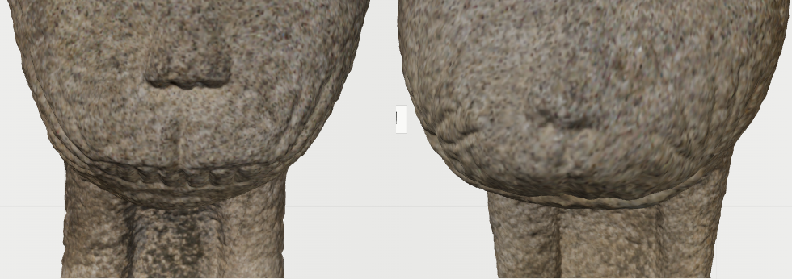
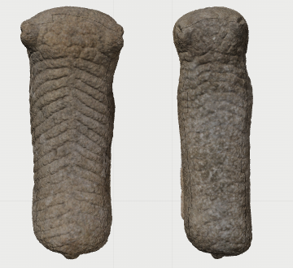
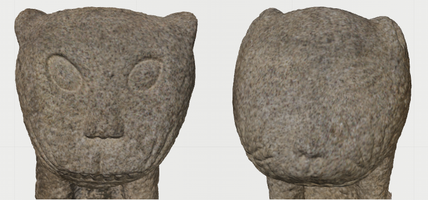
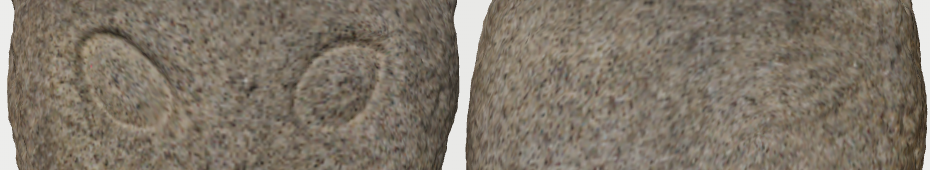

Index · 03
이야기의 단서를 유물에서 확인하기
Story에서 들은 갈기·수염·등무늬·이목구비·눈매를 봉황동 석사자의 실제 스캔과 연결했습니다. 관람자가 이야기 속 묘사에 해당하는 부위를 직접 찾고, 두 석사자의 형태를 비교할 수 있도록 관찰 구도를 정했습니다.
봉황동 석사자 3D 스캔 · 왼쪽 수사자, 오른쪽 암사자
-
갈기
정수리·목 뒤 · 위쪽 사선
정수리의 곱슬거리는 갈기는 이야기 속 사자를 알아보는 단서입니다. 위쪽 사선에서 머리와 목 뒤를 보여 주어, 정면에서 놓치기 쉬운 갈기의 배치와 겹침을 확인하도록 했습니다.
새겨진 결을 하나씩 따라가며 갈기의 개수와 음각·양각의 차이를 비교합니다.

수사자암사자 -
수염
입 주변 · 정면 확대
입 주변의 수염 자국은 얼굴 전체를 볼 때 지나치기 쉬운 작은 선입니다. 입과 수염을 가까이 보여 주어, 이야기에서 들은 수염의 모습을 실제 조각에서 찾아보도록 했습니다.
두 석사자의 같은 부위를 나란히 놓고, 한쪽에 새겨진 수염의 개수와 길이, 선이 굽고 끝나는 모양을 비교합니다.

수사자암사자 -
등무늬
목 뒤·등 · 위에서 내려다보기
Story의 길과 구릉으로 풀어낸 선이 실제 유물에서는 어떻게 이어지는지 보여 주는 부위입니다. 등을 위에서 내려다보는 구도로 목 뒤부터 몸통까지의 무늬를 한눈에 살필 수 있도록 했습니다.
반복되는 등줄기의 개수와 굽은 방향을 비교하며, 각각의 선이 이어지는 흐름을 따라갑니다.

수사자암사자 -
이목구비
얼굴 전체 · 정면
이야기에서 만난 사자의 얼굴을 실제 봉황동 석사자의 모습과 연결하도록, 귀부터 입까지 한 화면에 담았습니다. 귀·코·입이 얼굴 안에서 차지하는 크기와 배치를 함께 살펴보는 구도입니다.
정면에서 두 얼굴의 윤곽을 비교하고, Index에서 모델을 돌려 코와 입의 돌출 정도, 입 주변에 남은 이빨 표현을 확인하도록 했습니다.

수사자암사자 -
눈매
눈 주변 · 정면 확대
눈매는 얼굴의 인상을 만드는 부위이므로, 이목구비 전체 보기와 별도로 확대했습니다. 이야기 속에서 묘사된 표정을 관람자가 실제 눈의 형태와 연결해 살펴보도록 했습니다.
눈꼬리의 방향과 눈 주위에 새겨진 경계를 같은 시점에서 비교하며, 두 석사자의 눈매가 어떻게 다른지 확인합니다.

수사자암사자